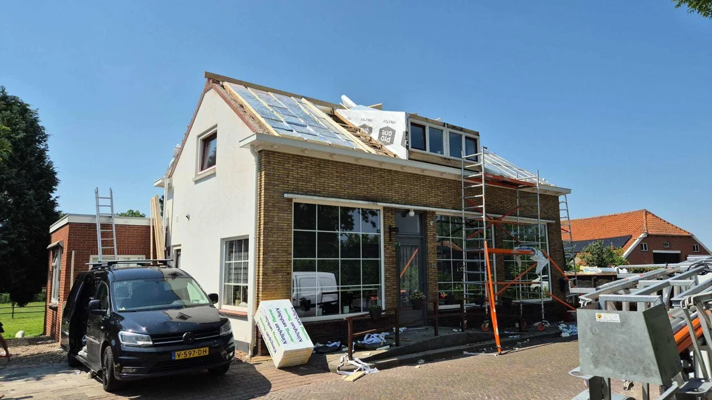
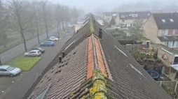

Welke aanpak heeft uw schuine dak nodig?
Een schuin dak bestaat uit meer dan dakpannen. Nokvorsten, panlatten, onderdak, isolatie, dakgoten en aansluitingen bepalen samen of het dak betrouwbaar blijft. Deze keuzehulp helpt u bepalen of onderhoud, reparatie, renovatie of isolatie het beste past.

Gebruik deze pagina als keuzehulp: herken eerst uw situatie, kies daarna de route die technisch het beste past. Twijfelt u? Dan is inspectie of lekkage opsporen verstandiger dan direct repareren.
Wat herkent u aan uw dak?
Kies het signaal dat het dichtst bij uw situatie komt. U ziet direct welke dienst of vervolgstap logisch is.
Losse of beschadigde dakpannen
Vaak lokaal herstel, maar controleer ook panlatten en onderdak.
Vocht bij de nok of zolder
Nokvorsten of nokafwerking kunnen de oorzaak zijn.
Veel mos of vervuiling
Reiniging kan helpen, mits dakpannen en coating nog goed genoeg zijn.
Koude zolder of hoge energiekosten
Dan is dakisolatie mogelijk logisch, maar ventilatie moet kloppen.
Dak blijft terugkerende gebreken houden
Dan is renovatie vaak beter dan steeds kleine reparaties.
Waterafvoer veroorzaakt problemen
Kijk dan ook naar goten, randen en aansluitingen.
Welke pagina past bij uw situatie?
Onderstaande routes helpen bezoekers direct naar de juiste detailpagina.
Dakrenovatie
Voor een verouderd hellend dak waarbij meerdere onderdelen tegelijk slijten.
Nokrenovatie
Bij problemen rond nokvorsten, noklijn of zoldervocht.
Dak isoleren
Voor comfort en energiebesparing, met aandacht voor ventilatie.
Dak reinigen
Bij vervuiling, mos en aanslag, als het dak technisch geschikt is.
Dakgoot vervangen
Als afvoerproblemen het schuine dak belasten.
Gratis dakinspectie
Als u niet zeker weet welke route past.
Waar u op kunt letten

diensten schuin dak visual 02 pannendak reinigen diensten pannendak reinigen

diensten schuin dak visual 03 dakgoot plaatsen
Veelgestelde vragen
VraagWanneer is repareren genoeg?▾
Als het probleem lokaal is en de rest van de dakopbouw gezond is. Bij meerdere signalen tegelijk is inspectie verstandiger.
VraagMoet een schuin dak altijd volledig gerenoveerd worden?▾
Nee. Soms is nokrenovatie, pannen vervangen of plaatselijk herstel voldoende. De staat van onderdak en latten bepaalt veel.
VraagKan isolatie tegelijk met renovatie?▾
Ja, vaak is dat juist slim. Dan kan de opbouw in een keer goed worden gecontroleerd en verbeterd.
Nog niet zeker? Kies dan niet op basis van een losse foto of vochtplek. Bel ons of vraag een gratis inspectie aan, dan bepalen we welke route technisch logisch is.